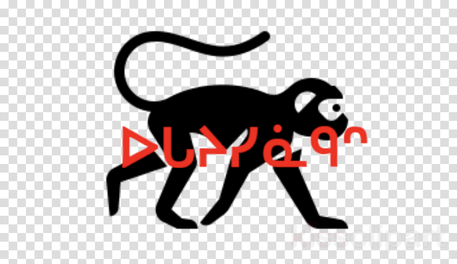

"Monkey — the Plains Cree word ocayisinâkês 'a monkey', a Wolvengrey/CW headword used as the trail's name."

Design source for the Monkey plaque: black monkey silhouette with red Cree syllabics ᐅᒐᔨᓯᓈᑫᐢ across the body, the English headline 'MONKEY' below.
Monkey is the English headline carved across the bottom of the plaque, but the larger Cree word painted across the body of the animal — ocayisinâkês — is where the linguistic interest lives. Plains Cree did not have monkeys in its pre‑contact ecological inventory, and so when monkeys arrived in the lexicon they arrived described rather than named: ocayisinâkês sits squarely on the productive ‑isinâkos‑ family of verbs and nouns of looking like / appearing as. The same final makes nipiy‑isinâkosiw 's/he looks watery' and maskoso‑isinâkosiw 's/he looks like a bear'. The ‑ês tail is the small‑animate diminutive — these are the little ones who look (a little) like a person. It is a word built by an Algonquian language doing exactly what Algonquian languages do when they meet a new animal: describe it from the inside out, by what it does or resembles, and let the noun fall out of the description.
Visually the plaque is one of the most direct on the wall: a clean black silhouette of a long‑tailed primate walking the length of the panel, red Cree syllabics ᐅᒐᔨᓯᓈᑫᐢ painted across its body, the English block‑letter MONKEY sitting underneath. Red‑on‑black‑on‑white is the working palette of this wall: black silhouettes for the animals, red for Cree, black for English. The monkey's curled tail is what makes it instantly read as 'monkey' rather than as any of the other species on the wall.
On the ground, 'Monkey' is one of the long‑standing nicknames for the Trailforks trail listed as Lovers Lane in Central Edmonton North (trail id 15796), with formal aliases Lovers Lane, Groat Road Roller Coaster, and Monkey Trail all on the same line. The trail winds through tight overhanging brush — the kind of tunnel‑of‑green section that earns names like monkey trail from riders who feel like they're swinging through the canopy. The trail sits on ᓀᐦᐃᔭᐤ ᐊᐢᑭᕀ Nêhiyaw‑Askiy (Plains Cree territory), and the carved ocayisinâkês is the local naming committee's choice for the Plains Cree word for the same idea.
Explore the trail on Trailforks for maps, conditions, and details.
itwêwina paradigm form (CW). Standard animate plural.
itwêwina paradigm form (CW). Used when a third party is also in play (e.g. 'the man saw a monkey' → the monkey is obviative).
Same word, dialectal split. Plains Cree (the wall's dialect) carries the <em>o‑</em>; Northern Cree does not. Useful for any rider who learned the word from a Northern speaker and notices the dialect difference.
| English | SRO | Syllabics |
|---|---|---|
| Monkey (Plains Cree) | ocayisinâkês | ᐅᒐᔨᓯᓈᑫᐢ |
| Monkeys (plural) | ocayisinâkêsak | ᐅᒐᔨᓯᓈᑫᓴᐠ |
| Monkey (obviative — 'the other one') | ocayisinâkêsa | ᐅᒐᔨᓯᓈᑫᓴ |
| My (pet / cute little) monkey | nicôcayisinâkêsim | ᓂᒍᒐᔨᓯᓈᑫᓯᒼ |
| Person, human being (the morphological cousin) | ayisiyiniw | ᐊᔨᓯᔨᓂᐤ |
SRO uses ê î ô â. Syllabics match the SRO shown.
Dialectal preferences may affect minor spelling choices; check local norms for signage.
References: itwêwina, Online Cree Dictionary, Plains Cree Dictionary, Trailforks